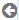

KPI | Purpose |
Page views | Tracks the page views by users (both registered users and guest users). This data provides an insight into which portal pages have the most or least number of views. For example, a large number of page views for an API's detail page could indicate that it is a popular API. Top 10 such page views are listed in the chart. |
Page views (Guest vs Registered) | Tracks the page views by users who visit API Portal as guest users versus registered users. |
Visits per API | Tracks the visits to the details page of a particular API. The top 10 APIs are displayed. |
Unique visitors | Tracks the total number of unique visitors who have accessed API Portal during a specified time interval. |
API views over time | Tracks the overall API views over time in the specified time interval. |
Page views over time | Tracks the overall page views over time in the specified time interval. |
Settings | Description |
 | Click to view the legend of the chart. Hovering the cursor over any of the elements in the legend highlights the section pertaining to the legend chosen. |
Use this to resize the chart. |